5. Appendices
Here we describe the installation and basic use of the tools used in the document "Java 5 Persistence in Practice." The information provided below is current as of May 2007. It will quickly become obsolete. When that happens, readers will be asked to follow similar steps, though they will not be identical. The installations were performed on a Windows XP Professional machine.
5.1. Java
We will use the latest version of Java available from Sun. Downloads are accessible via the url [http://java.sun.com/javase/downloads/index.jsp]:


Run the JDK installer from the downloaded file. By default, Java is installed in [C:\Program Files\Java]:

5.2. Eclipse
5.2.1. Basic Installation
Eclipse is available at IDE and can be downloaded at url [http://www.eclipse.org/]. Download Eclipse 3.2.2 below:

Once the zip file is downloaded, extract it to a folder on your hard drive:

We will refer to the Eclipse installation folder, shown above as [C:\devjava\eclipse 3.2.2\eclipse], as <eclipse> from now on. [eclipse.exe] is the executable file, and [eclipse.ini] is its configuration file. Let’s take a look at its contents:
These arguments are used when launching Eclipse as follows:
This achieves the same result as using the .ini file by creating a shortcut that launches Eclipse with these same arguments. Let’s explain them:
- -vmargs: indicates that the following arguments are intended for the Java Virtual Machine that will run Eclipse. Eclipse is a Java application.
- -Xms40m: ?
- -Xmx256m: sets the memory size in MB allocated to the Java Virtual Machine (JVM) that runs Eclipse. By default, this size is 256 MB, as shown here. If the machine allows it, 512 MB is preferable.
These arguments are passed to JVM, which will run Eclipse. JVM is represented by a file named [java.exe] or [javaw.exe]. How is this file located? In fact, it is located in several ways:
- in the PATH file within the OS directory
- in the <JAVA_HOME>/jre/bin folder, where JAVA_HOME is a system variable defining the root folder of a JDK.
- to a location passed as an argument to Eclipse in the form -vm <path>\javaw.exe
This last solution is preferable because the other two are subject to the vagaries of subsequent application installations, which may either change the PATH of the OS or change the JAVA_HOME variable.
We therefore create the following shortcut:

<eclipse>\eclipse.exe" -vm "C:\Program Files\Java\jre1.6.0_01\bin\javaw.exe" -vmargs -Xms40m -Xmx512m | |
Eclipse installation folder <eclipse> |
Once this is done, launch Eclipse using this shortcut. A dialog box will appear:

A [workspace] is a workspace. Let’s accept the default values provided. By default, Eclipse projects will be created in the <workspace> folder specified in this dialog box. There is a way to override this behavior. This is what we will do systematically. Therefore, the response given in this dialog box is not important.
Once this step is complete, the Eclipse development environment is displayed:

We close the [Welcome] view as suggested above:
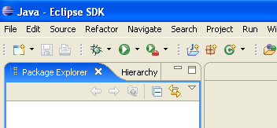
Before creating a Java project, we will configure Eclipse to specify the JDK to be used for compiling Java projects. To do this, we select the option and [Window / Preferences / Java / Installed JREs ]:

Normally, the JRE (Java Runtime Environment) that was used to launch Eclipse itself should be present in the list of JRE. This will normally be the only one. You can add JRE entries using the [Add] button. You must then specify the root of the JRE. The [Search] button, on the other hand, will launch a search for JREs on the disk. This is a good way to keep track of the JREs files that you install and then forget to uninstall when upgrading to a newer version. Above, the checked JRE is the one that will be used to compile and run Java projects. This is the one that was installed in section 5.1 and was also used to launch Eclipse. Double-clicking on it opens its properties:

Now, let’s create a Java project [File / New / Project]:
 |  |
Select [Java Project], then [Next] ->

In [2], we specify an empty folder where the Java project will be installed. In [1], we name the project. It does not have to be named after its folder, as the example above might suggest. Once this is done, use the [Next] button to proceed to the next page of the creation wizard:

Above, we create a special folder within the project to store the source files (.java):

 |
- In [1], we see the folder [src], where the .java source files will be stored
- In [2], we see the folder [bin], where the compiled .class files will be stored
We finish the wizard with [Finish]. We now have a Java project skeleton:

Right-click on the [test1] project to create a Java class:

 |
- in [1], the folder where the class will be created. By default, Eclipse suggests the current project folder.
- in [2], the package in which the class will be placed
- In [3], the name of the class
- In [4], we specify that the static method [main] should be generated
We confirm the wizard with [Finish]. The project is then enhanced with a class:

Eclipse has generated the class skeleton. This can be accessed by double-clicking on [Test1.java] above:

We modify the code above as follows:
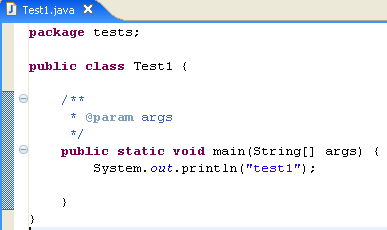
We run the program [Test1.java]: [clic droit sur Test1.java -> Run As -> Java Application]

The result of the execution is displayed in the [Console] window:

The [Console] window should appear by default. If it does not, you can display it using [Window/Show View/Console]:

5.2.2. Compiler Selection
Eclipse allows you to generate code compatible with Java 1.4, Java 1.5, and Java 1.6. By default, it is configured to generate code compatible with Java 1.4. The API JPA requires Java 1.5 code. We change the type of code generated by [Window / Preferences / Java / Compiler]:
 |
- to [1]: selecting option [Java / Compiler]
- to [2]: selection of Java 5.0 compatibility
5.2.3. Installing Callisto- s
The basic version installed above allows you to build Java console applications but not web-based or Swing Java applications; otherwise, you have to do everything yourself. We will install various plugins:
Here’s how to do it [Help/Software Udates/Find and Install]:
 |
- In [2], specify that you want to install new plugins
 |
- In [3], specify the sites to search for plugins
- In [4], we check the desired plugins
 |
- In [5], Eclipse indicates that you have selected a plugin that depends on other plugins that have not been selected
- In [6], use the [Select Required] button to automatically select the missing plugins
- In [7], accept the license terms for these various plugins
 |
- In [8], you see a list of all the plugins that will be installed
- In [9], start downloading these plugins
- In [10], once they have been downloaded, install them all without verifying their signatures
 |
- In [11], once the plugins are installed, let Eclipse restart
- in [12], if you run [File/New/Project], you will find that you can now create web applications, which was not possible initially.
5.2.4. Installation of the [TestNG] plugin
TestNG (Next Generation Test) is a unit testing tool similar in concept to JUnit. However, it offers improvements that make us prefer it here over JUnit. We proceed as before: [Help/Software Udates/Find and Install]:
 |
- In [2], we specify that we want to install new plugins
 |
- in [3a], the download site for [TestNG] is missing. We add it with [3b]
- In [4b]: the plugin site is [http://beust.com/eclipse]. In [4a], enter whatever you want.
 |
- In [5a], the plugin [TestNG] is selected for the update. In [5b], we start the update.
- In [6], the connection to the plugin’s website has been established. We are shown all the plugins available on the site. There is only one here, which we select before moving on to the next step.
 |
- In [7], we accept the plugin’s license terms
- In [8], we see a list of all the plugins that will be installed; there is one here. We start the download. Then everything proceeds as described above for Callisto plugins.
Once Eclipse has restarted, we can verify the presence of the new plugin by, for example, viewing the available views [Window / show View / Other]:
 |
As shown above, there is now a [TestNG] view that did not exist before.
5.2.5. Installing the [Hibernate Tools] plugin
Hibernate is a JPA provider, and the [Hibernate Tools] plugin for Eclipse is useful for building JPA applications. As of May 2007, only its latest version (3.2.0beta9) allows you to work with Hibernate, and it is not available via the mechanism just described. Only older versions are available. We will therefore proceed differently.
The plugin is available on the Hibernate Tools website: http://tools.hibernate.org/.
 |
- In [1], select the latest version from Hibernate Tools
- In [2], download it
 |
- In [3], use an unzip tool to extract the downloaded ZIP file into the <eclipse> folder (it is best to have Eclipse closed)
- in [4], accept that some files will be overwritten during the operation
Restart Eclipse:
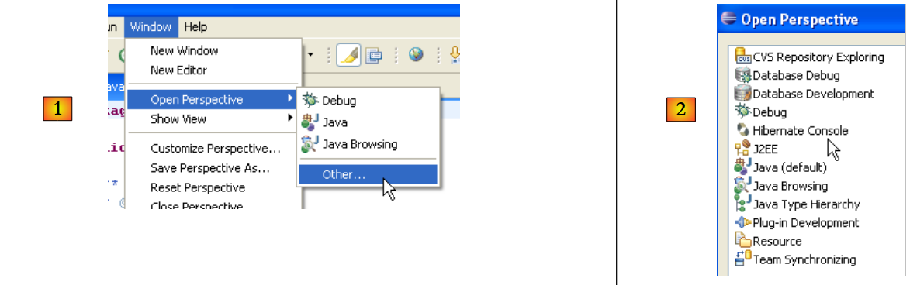 |
- in [1]: open a perspective
- In [2]: there is now a [Hibernate Console] perspective
We will not proceed further with the [Hibernate Tools] plugin (Cancel in [2]). Its usage is explained in the tutorial examples.
Sometimes Eclipse fails to detect new plugins. You can force it to rescan all its plugins using the -clean option. This would modify the Eclipse shortcut executable as follows:
"<eclipse>\eclipse.exe" -clean -vm "C:\Program Files\Java\jre1.6.0_01\bin\javaw.exe" -vmargs -Xms40m -Xmx512m
Once the new plugins are detected by Eclipse, remove the "option -clean" above.
5.2.6. Installing the [SQL Explorer] plugin
We will now install a plugin that will allow us to explore the contents of a database directly from Eclipse. The plugins available for Eclipse can be found on the [http://eclipse-plugins.2y.net/eclipse/plugins.jsp] website:
 |
- at [1]: the Eclipse plugins website
- at [2]: select the [Database] category
- at [3]: in the [Database] category, select a sorted view (not very reliable given the small number of people voting)
- in [4]: QuantumDB ranks first
- in [5]: we choose SQLExplorer, which is older, lower-ranked (3rd) but still very good. We go to the [plugin-homepage] plugin website
 |
- for [6] and [7]: we proceed to download the plugin.
 |
- to [8]: unzip the plugin’s ZIP file into the Eclipse folder.
To verify, restart Eclipse, optionally using the -clean option:
 |
- in [1]: open a new perspective
- in [2]: you will see that a [SQL Explorer] perspective is available. We will return to this later.
5.3. The Tomcat 5.5 servlet container
5.3.1. Installation
To run servlets, we need a servlet container. Here we present one of them, Tomcat 5.5, available at url http://tomcat.apache.org/. We provide the steps (May 2007) to install it. If a previous version of Tomcat is already installed, it is best to uninstall it first.
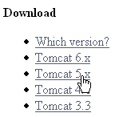
To download the product, follow the link above:
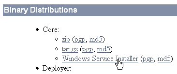
You can download the .exe file for the Windows platform. Once downloaded, launch the Tomcat installation by double-clicking on it:

Accept the license terms ->

Select [next] ->

Accept the suggested installation folder or change it using [Browse] ->

Set the Tomcat server administrator’s login and password. Here we used [admin / admin] ->
 |
Tomcat 5.x requires JRE 1.5. It should normally find the version installed on your machine. Above, the specified path is for JRE 1.6, downloaded in section 5.1. If no JRE is found, specify its root directory using the [1] button. Once this is done, use the [Install] button to install Tomcat 5.x ->

The [Finish] button completes the installation. The presence of Tomcat is indicated by an icon on the right side of the Windows taskbar:

Right-clicking this icon gives you access to the Start and Stop server commands:
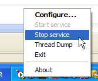
We use option [Stop service] to stop the web server now:

Note the change in the icon’s status. The icon can be removed from the taskbar:

Tomcat was installed in the folder chosen by the user, which we will now refer to as <tomcat>. The directory structure for the downloaded Tomcat 5.5.23 is as follows:

The Tomcat installation has added a number of shortcuts to the [Démarrer] menu. We use the [Monitor] link below to launch the Tomcat stop/start tool:

We then see the icon shown earlier:
The Tomcat monitor can be launched by double-clicking this icon:

The [Start - Stop - Pause] - Restart buttons allow us to start, stop, and restart the server. We start the server using [Start], then, using a browser, we navigate to url http://localhost:8080. We should see a page similar to the following:

You can follow the links below to verify that Tomcat has been installed correctly:

All the links on the [http://localhost:8080] page are of interest, and the reader is encouraged to explore them. We will have the opportunity to revisit the links for managing web applications deployed on the server:

5.3.2. Deploying a Web Application on the Tomcat Server
5.3.3. Deployment
A web application must follow certain rules to be deployed within a servlet container. Let <webapp> be the directory of a web application. A web application consists of:
in the <webapp>\WEB-INF\classes folder | |
in the <webapp>\WEB-INF\lib folder | |
in the <webapp> folder or subfolders |
The web application is configured by a XML file: <webapp>\WEB-INF\web.xml. This file is not necessary in simple cases, particularly when the web application contains only static files. Let’s create the following HTML file:
<html>
<head>
<title>Application exemple</title>
</head>
<body>
Application exemple active ....
</body>
</html>
and let's save it to a folder:

If we load this file in a browser, we get the following page:

The URL displayed by the browser shows that the page was not served by a web server but loaded directly by the browser. We now want it to be available via the Tomcat web server.
Let’s go back to the <tomcat> directory tree:
Web applications deployed on the Tomcat server are configured using XML files placed in the [<tomcat>\conf\Catalina\localhost] folder:
 |  |
These XML files can be created manually because their structure is simple. Rather than taking this approach, we will use the web tools provided by Tomcat.
5.3.4. Tomcat Administration
On its login page at http://localhost:8080, the server provides links for administration:

The link [Tomcat Administration] allows us to configure the resources that Tomcat makes available to the web applications deployed within it, such as a database connection pool. Let’s follow the link:

The page that appears indicates that administering Tomcat 5.x requires a specific package called "admin." Let’s return to the Tomcat website [http://tomcat.apache.org/download-55.cgi]:

Let’s download the zip file labeled [Administration Web Application] and then unzip it. Its contents are as follows:

The [admin] folder must be copied to [<tomcat>\server\webapps], where <tomcat> is the folder where Tomcat 5.x was installed:

The [localhost] folder contains a file named [admin.xml], which must be copied to [<tomcat>\conf\Catalina\localhost]:

Stop and then restart Tomcat if it was running. Then, using a browser, request the web server’s login page again:

Follow the link [Tomcat Administration]. You will see a login page (you may need to reload or refresh the page to see it):
 |  |
Here, you must re-enter the credentials you provided during the Tomcat installation. In our case, we enter the username and password as "admin". Clicking the [Login] button takes us to the following page:

This page allows the Tomcat administrator to define
- data sources (Data Sources),
- the information required for sending email (Mail Sessions),
- environment data accessible to all applications (Environment Entries),
- manage Tomcat users/administrators (Users),
- manage user groups (Groups),
- define roles (= what a user can and cannot do),
- define the characteristics of web applications deployed by the server (Catalina Service)
Follow the link [Roles] above:

A role allows you to define what a user or group of users can or cannot do. Certain rights are associated with a role. Each user is associated with one or more roles and has the rights associated with them. The role [manager] below grants the right to manage web applications deployed in Tomcat (deployment, startup, shutdown, unloading). We will create a user named [manager] and assign them the role [manager] to allow them to manage Tomcat applications. To do this, we follow the link [Users] on the administration page:

We see that a number of users already exist. We use the option [Create New User] link to create a new user:

We give the user "manager" the password "manager" and assign them the "manager" role. We use the [Save] button to confirm this addition. The new user appears in the list of users:

This new user will be added to the [<tomcat>\conf\tomcat-users.xml] file:

whose content is as follows:
<?xml version='1.0' encoding='utf-8'?>
<tomcat-users>
<role rolename="tomcat"/>
<role rolename="role1"/>
<role rolename="manager"/>
<role rolename="admin"/>
<user username="tomcat" password="tomcat" roles="tomcat"/>
<user username="role1" password="tomcat" roles="role1"/>
<user username="both" password="tomcat" roles="tomcat,role1"/>
<user username="manager" password="manager" fullName="" roles="manager"/>
<user username="admin" password="admin" roles="admin,manager"/>
</tomcat-users>
- line 10: the user [manager] that was created
Another way to add users is to edit this file directly. This is the procedure to follow if, for example, you have forgotten the password for the admin or manager account.
5.3.5. Managing Deployed Web Applications
Now let’s return to the [http://localhost:8080] login page and follow the [Tomcat Manager] link:
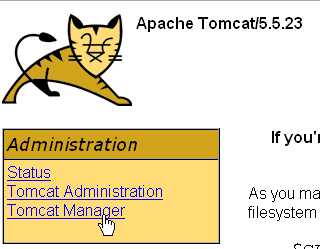
This takes us to an authentication page. We log in as manager / manager, c.a.d—the user with the [manager] role that we just created. In fact, only a user with this role can use this link. On line 11 of [tomcat-users.xml], we see that the user [admin] also has the role [manager]. We could therefore also use the authentication [admin / admin].

We get a page listing the applications currently deployed in Tomcat:

We can add a new application using the forms at the bottom of the page:

Here, we want to deploy the sample application we built earlier within Tomcat. We do this as follows:

/example | the name used to identify the web application to be deployed | |
C:\data\work\2006-2007\eclipse\dvp-jpa\annexes\tomcat\example | the web application folder |
To obtain the [C:\data\travail\2006-2007\eclipse\dvp-jpa\annexes\tomcat\exemple\exemple.html] file, we will ask Tomcat for the URL [http://localhost:8080/exemple/exemple.html]. The context is used to name the root of the deployed web application tree. We use the [Deploy] button to deploy the application. If everything goes well, we get the following response page:

and the new application appears in the list of deployed applications:
 |
Let’s comment out the /example context line above:
link to http://localhost:8080/example | |
starts the application | |
stops the application | |
allows you to reload the application. This is necessary, for example, when you have added, modified, or deleted certain classes from the application. | |
Deletes the [/exemple] context. The application disappears from the list of available applications. |
Now that our /example application is deployed, we can run some tests. We request the [exemple.html] page via the url [http://localhost:8080/exemple/vues/exemple.html]:

Another way to deploy a web application on the Tomcat server is to provide the information we entered via the web interface in a [contexte] file.xml is placed in the [<tomcat>\conf\Catalina\localhost] folder, where [contexte] is the name of the web application.
Let’s return to the Tomcat administration interface:

Let’s delete the [/exemple] application along with its [Undeploy] link:

The [/exemple] application is no longer part of the list of active applications. Now let’s define the following [exemple.xml] file:
The XML file consists of a single <Context> tag, whose docBase attribute defines the folder containing the web application to be deployed. Let’s place this file in <tomcat>\conf\Catalina\localhost:

Stop and restart Tomcat if necessary, then view the list of active applications using the Tomcat administrator:

The [/exemple] application is indeed present. Let’s request the url using a browser:
[http://localhost:8080/exemple/exemple.html]:
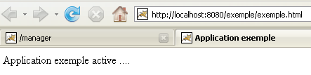
A web application deployed in this way can be removed from the list of deployed applications, in the same way as before, using the link [Undeploy]:
In this case, the file [exemple.xml] is automatically removed from the [<tomcat>\conf\Catalina\localhost] folder.
Finally, to deploy a web application within Tomcat, you can also define its context in the [<tomcat>\conf\server.xml] file. We will not elaborate on this point here.
5.3.6. Web application with a home page
When we request the url [http://localhost:8080/exemple/], we get the following response:

With some previous versions of Tomcat, we would have received the contents of the physical directory of the [/exemple] application.
You can configure the system so that when the context is requested, a so-called home page is displayed. To do this, create a file named [web.xml] and place it in the <example>\WEB-INF folder, where <example> is the physical folder of the [/exemple] web application. The file is as follows:
- lines 2-5: the root <web-app> tag with attributes copied and pasted from the [web.xml] file in the [/admin] Tomcat application (<tomcat>/server/webapps/admin/WEB-INF/web.xml).
- Line 7: the display name of the web application. This is a freely chosen name with fewer constraints than the application context name. For example, you can include spaces, which is not possible with the context name. This name is displayed, for example, by the Tomcat administrator:

- line 8: description of the web application. This text can then be retrieved programmatically.
- Lines 9–11: the list of welcome files. The <welcome-file-list> tag is used to define the list of views to be presented when a client requests the application context. There can be multiple views. The first one found is presented to the client. Here we have only one: [/exemple.html]. Thus, when a client requests url or [/exemple], it will actually be url or [/exemple/exemple.html] that is delivered to them.
Let’s save this [web.xml] file in <example>\WEB-INF:
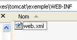
If Tomcat is still running, you can force it to reload the [/exemple] web application using the [Recharger] link:
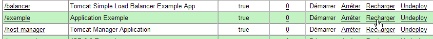
During this "reload" operation, Tomcat re-reads the [web.xml] file contained within [<exemple>\WEB-INF] if it exists. This will be the case here. If Tomcat was stopped, restart it.
Using a browser, let’s request the URL and [http://localhost:8080/exemple/] files:

The host file mechanism worked.
5.3.7. Integrating Tomcat into Eclipse
We will now integrate Tomcat into Eclipse. This integration allows you to:
- start/stop Tomcat from within Eclipse
- develop Java web applications and run them on Tomcat. The Eclipse/Tomcat integration allows you to trace (debug) the application’s execution, including the execution of Java classes (servlets) run by Tomcat.
Let’s launch Eclipse, then view the [Servers] view:
 |
- in [1]: Window/Show View/Other
- in [2]: select the [Servers] view and go to [OK]
 |
- In [1], you have a new view [Servers]
- In [2], right-click on the view and select Create New Server [New/Server]
- In [3], select the server [Tomcat 5.5], then proceed to [Next]
 |
- In [4], specify the Tomcat 5.5 installation directory
- In [5], indicate that there are no Eclipse/Tomcat projects at this time. Then run [Finish]
Adding the server results in a folder appearing in the Eclipse Project Explorer [6] and a server appearing in the view [servers] [7]:
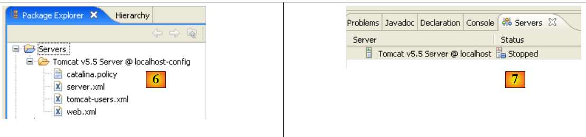 |
The [Servers] view displays all registered servers; here, only the Tomcat 5.5 server we just registered is shown. Right-clicking on it provides access to commands to start, stop, and restart the server:

Above, we are starting the server. When it starts, a number of logs are written to the [Console] view:
Understanding these logs takes some getting used to. We won’t dwell on them for now. However, it is important to verify that they do not indicate any context loading errors. When launched, the Tomcat/Eclipse server attempts to load the contexts of the applications it manages. Loading an application’s context involves processing its [web.xml] file and loading one or more classes that initialize it. Several types of errors can occur:
- The [web.xml] file contains syntax errors. This is the most common error. It is recommended to use a tool capable of validating a XML document during its creation.
- Some classes to be loaded were not found. They are searched for in [WEB-INF/classes] and [WEB-INF/lib]. You should generally verify the presence of the necessary classes and the spelling of those declared in the [web.xml] file.
The server launched from Eclipse does not have the same configuration as the one installed in Section 5.3. To verify this, request url and [http://localhost:8080] using a browser:

This response does not indicate that the server is not working, but rather that the resource / requested from it is not available. With the Tomcat server integrated into Eclipse, these resources will be web projects. We will see this later. For now, let’s stop Tomcat:

The previous operating mode can be changed. Let’s return to the [Servers] view and double-click on the Tomcat server to access its properties:
 | 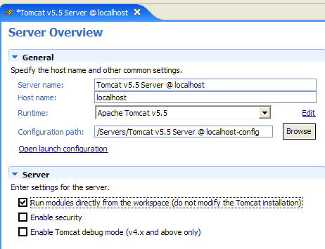 |
The [1] checkbox is responsible for the behavior described above. When checked, web applications developed in Eclipse are not declared in the configuration files of the associated Tomcat server but in separate configuration files. As a result, the default applications defined within the Tomcat server—[admin] and [manager], which are two useful applications—are not available. Therefore, we will uncheck [1] and restart Tomcat:
 |  |
Once this is done, let’s request url and [http://localhost:8080] using a browser:

We see the behavior described in section 5.3.4.
In our previous examples, we used a browser outside of Eclipse. We can also use a browser within Eclipse:

Above, we select the internal browser. To launch it from Eclipse, you can use the following icon:

The browser that actually launches will be the one selected by option [Window -> Web Browser]. Here, we get the internal browser:

If necessary, launch Tomcat from Eclipse and request the url [http://localhost:8080] in [1]:

Follow the link [Tomcat Manager]:

The [login / mot de passe] credentials required to access the [manager] application are requested. Based on the Tomcat configuration we set up earlier, you can enter [admin / admin] or [manager / manager]. This returns the list of deployed applications:

5.4. SGBD Firebird
5.4.1. SGBD Firebird
SGBD Firebird is available at url [http://www.firebirdsql.org/]:
 |
- in [1]: use the option [Download.Firebird Relational Database]
- in [2]: specify the desired Firebird version
- In [3]: download the installation binary
Once the [3] file has been downloaded, double-click it to install the Firebird SGBD. The SGBD is installed in a folder with contents similar to the following:
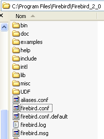
The binaries are in the [bin] folder:

allows you to start/stop SGBD | |
command-line client for managing databases |
Note that by default, the administrator of SGBD is named [SYSDBA] and the password is [masterkey]. Menus have been installed in [Démarrer]:

The option [Firebird Guardian] allows you to start/stop the SGBD. After startup, the SGBD icon remains in the Windows taskbar:
 |
To create and manage Firebird databases using the [isql.exe] command-line client, you must read the documentation included with the product, which is accessible via Firebird shortcuts in [Démarrer/Programmes/Firebird 2.0].
A quick way to work with Firebird and learn the SQL language is to use a graphical client. One such client is IB-Expert, described in the following paragraph.
5.4.2. Working with Firebird using IB- Expert
The main website for IB-Expert is [http://www.ibexpert.com/].
 |
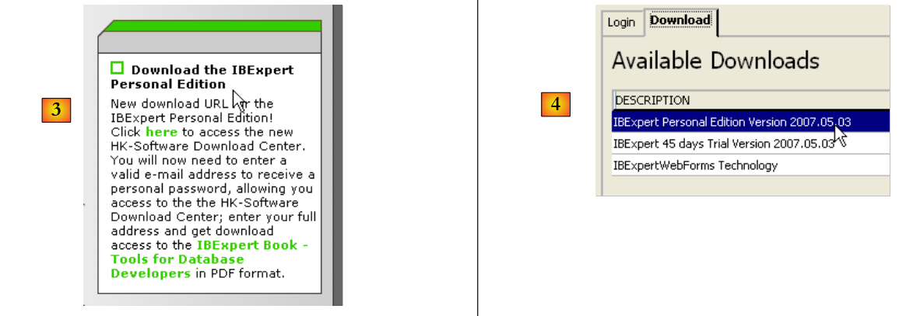 |
- In [1], select IBExpert
- In [2], select the download after choosing your preferred language
- In [3], select version, known as the "personal" version because it is free. You must, however, register on the site.
- In [4], download IBExpert
IBExpert is installed in a folder similar to the following:

The executable is [ibexpert.exe]. A shortcut is normally available in the [Démarrer] menu:

Once launched, IBExpert displays the following window:
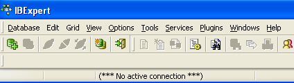
Let’s use the option [Database/Create Database] to create a database:

can be [local] or [remote]. Here, our server is on the same machine as [IBExpert]. We choose [local] | |
Use the button labeled [dossier] in the dropdown menu to select the database file. Firebird puts the entire database into a single file. This is one of its advantages. You can transfer the database from one computer to another by simply copying the file. The suffix [.fdb] is added automatically. | |
SYSDBA is the default administrator for current Firebird distributions | |
masterkey is the password for the administrator SYSDBA in current Firebird distributions | |
the dialect SQL to use | |
If the checkbox is selected, IBExpert will display a link to the database after it has been created |
If, when you click the [OK] creation button, you see the following warning:

it means you haven't started Firebird. Start it. A new window will appear:

Character set to use. It is recommended to select the [ISO-8859-1] from the drop-down list, which allows the use of accented Latin characters. |
[IBExpert] is capable of handling various SGBD versions derived from Interbase. Select the Firebird version that you have installed. |
Once this new window is validated by [Register], the result [1] appears in the [Database Explorer] window. This window may be closed accidentally. To bring it back up, run [2]:
 |
To access the created database, simply double-click on its link. IBExpert then displays a tree structure providing access to the database properties:

5.4.3. Creating a data table
Let’s create a table. Right-click on [Tables] (see window above) and select option [New Table]. This opens the table properties definition window:
 |
Let’s start by naming the table [ARTICLES] using the input field [1]:

Use the [2] input field to define a primary key [ID]:

A field is made a primary key by double-clicking the [PK] (Primary Key) field. Let’s add fields using the button located above [3]:

Until we have "compiled" our definition, the table is not created. Use the [Compile] button above to finalize the table definition. IBExpert prepares the SQL queries to generate the table and asks for confirmation:

Interestingly, IBExpert displays the SQL queries it has executed. This allows you to learn both the SQL language and the potentially proprietary SQL dialect used. The [Commit] button validates the current transaction, while [Rollback] cancels it. Here, we accept it using [Commit]. Once this is done, IBExpert adds the created table to our database tree:
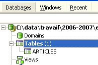
By double-clicking on the table, we can access its properties:

The [Constraints] panel allows us to add new integrity constraints to the table. Let’s open it:

We see the primary key constraint we created. We can add other constraints:
- foreign keys [Foreign Keys]
- field integrity constraints [Checks]
- field uniqueness constraints [Uniques]
Let’s specify that:
- the fields [ID, PRIX, STOCKACTUEL, STOKMINIMUM] must be >0
- the field [NOM] must be non-empty and unique
Open the [Checks] panel and right-click in its constraint definition area to add a new constraint:
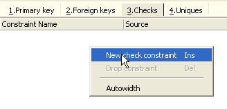
Let’s define the desired constraints:

Note above that the constraint [NOM<>''] uses two apostrophes and not quotation marks. Compile these constraints using the [Compile] button above:

Once again, IBExpert provides helpful feedback by listing the SQL queries it has executed. Now let’s move on to the [Constraints/Uniques] panel to specify that the name must be unique. This means that the same name cannot appear twice in the table.

Let’s define the constraint:

Then let’s compile it. Once that’s done, open the [DDL] panel (Data Definition Language) for the [ARTICLES] table:

This panel displays the table generation code SQL, including all its constraints. You can save this code in a script to run it later:
SET SQL DIALECT 3;
SET NAMES ISO8859_1;
CREATE TABLE ARTICLES (
ID INTEGER NOT NULL,
NOM VARCHAR(20) NOT NULL,
PRIX DOUBLE PRECISION NOT NULL,
STOCKACTUEL INTEGER NOT NULL,
STOCKMINIMUM INTEGER NOT NULL
);
ALTER TABLE ARTICLES ADD CONSTRAINT CHK_ID check (ID>0);
ALTER TABLE ARTICLES ADD CONSTRAINT CHK_PRIX check (PRIX>0);
ALTER TABLE ARTICLES ADD CONSTRAINT CHK_STOCKACTUEL check (STOCKACTUEL>0);
ALTER TABLE ARTICLES ADD CONSTRAINT CHK_STOCKMINIMUM check (STOCKMINIMUM>0);
ALTER TABLE ARTICLES ADD CONSTRAINT CHK_NOM check (NOM<>'');
ALTER TABLE ARTICLES ADD CONSTRAINT UNQ_NOM UNIQUE (NOM);
ALTER TABLE ARTICLES ADD CONSTRAINT PK_ARTICLES PRIMARY KEY (ID);
5.4.4. Inserting data into a table
Now it's time to enter data into table [ARTICLES]. To do this, let's use its panel [Data]:

Data is entered by double-clicking the input fields in each row of the table. A new row is added using the [+] button, and a row is deleted using the [-] button. These operations are performed within a transaction that is committed using the [Commit Transaction] button (see above). Without this commit, the data will be lost.
5.4.5. The SQL editor for [IB-Expert]
The SQL language (Structured Query Language) allows a user to:
- create tables by specifying the type of data they will store and the constraints that this data must satisfy
- insert data into them
- modify certain data
- delete other data
- use the content to retrieve information
- ...
IBExpert allows a user to perform operations 1 through 4 graphically. We have just seen this. When the database contains many tables, each with hundreds of rows, we need information that is difficult to obtain visually. Suppose, for example, that an online store has thousands of customers per month. All purchases are recorded in a database. After six months, it is discovered that product “X” is defective. The store wants to contact everyone who purchased it so they can return the product for a free exchange. How can the addresses of these buyers be found?
- You could manually search through all the tables to find these buyers. That would take a few hours.
- We can issue a query SQL that will return a list of these people in a matter of seconds
The SQL language is useful whenever
- the amount of data in the tables is large
- there are many tables linked together
- the information to be retrieved is spread across multiple tables
- ...
We now present the SQL editor from IBExpert. This editor is accessible via option, [Tools/SQL Editor], or [F12]:

This gives you access to an advanced SQL query editor where you can experiment with queries. Let’s enter a query:

We execute the query SQL using the button [Execute] above. We obtain the following result:
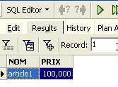
Above, the [Results] tab displays the result table for the SQL [Select] command. To issue a new command SQL, simply return to the [Edit] tab. You will then see the SQL command that was executed.

Several buttons on the toolbar are useful:
- the [New Query] button allows you to move to a new query SQL:

You will then see a blank editing page:

You can then enter a new order, SQL:

and execute it:

Let’s return to the [Edit] tab. The various SQL orders issued are stored by [IBExpert]. The [Previous Query] button allows you to return to a previously issued SQL command:

You are then returned to the previous request:

The [Next Query] button allows you to go to the next SQL command:

You will then see the next order, SQL, in the list of saved SQL orders:

The [Delete Query] button allows you to delete an order SQL from the list of saved orders:
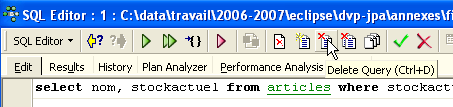
The [Clear Current Query] button clears the editor contents for the displayed SQL order:
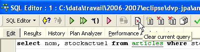
The [Commit] button allows you to permanently save the changes made to the database:

The [RollBack] button allows you to undo the changes made to the database since the last [Commit]. If no [Commit] has been performed since connecting to the database, then the changes made since that connection are undone.

Let’s look at an example. Let’s insert a new row into the table:

The SQL command is executed, but nothing is displayed. We do not know if the insertion took place. To find out, let’s execute the SQL command following [New Query]:

We get the following result:

The row has therefore been successfully inserted. Let’s now examine the table’s contents in another way. Double-click on the table [ARTICLES] in the database explorer:

We get the following table:

The arrow button above allows you to refresh the table. After refreshing, the table above does not change. It appears that the new row was not inserted. Let’s return to the SQL editor (F12) and then validate the SQL command issued with the [Commit] button:

Once this is done, let’s return to the [ARTICLES] table. We can see that nothing has changed even when using the [Refresh] button:

Above, let’s open the [Fields] tab and then return to the [Data] tab. This time, the inserted row appears correctly:

When the various SQL commands begin to be executed, the editor opens what is called a transaction in the database. The changes made by these SQL commands from the SQL editor will only be visible as long as you remain in the same SQL editor (you can open multiple instances). It is as if the SQL editor were working not on the actual database but on its own copy. In reality, this is not exactly how it works, but this analogy can help us understand the concept of a transaction. All changes made to the copy during a transaction will only be visible in the actual database once they have been committed by a [Commit Transaction]. The current transaction is then completed, and a new transaction begins.
Changes made during a transaction can be rolled back using a command called [Rollback]. Let’s try the following experiment. Start a new transaction (simply run [Commit] on the current transaction) with the following command: SQL:
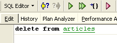
Let's run this command, which deletes all rows from table [ARTICLES], and then run [New Query], the new command SQL, as follows:

We get the following result:

All rows have been deleted. Remember that this was done on a copy of the table [ARTICLES]. To verify this, double-click on the table [ARTICLES] below:

and view the [Data] tab:

Even if you use the [Refresh] button or switch to the [Fields] tab and then back to the [Data] tab, the content above remains unchanged. This has been explained. We are in another transaction that is working on its own copy. Now let’s return to the SQL editor (F12) and use the [RollBack] button to undo the line deletions that were made:

We are asked for confirmation:

Let’s confirm. The SQL editor confirms that the changes have been undone:

Let’s rerun the SQL query above to verify. The rows that had been deleted are now back:

Operation [Rollback] has restored the copy on which editor SQL is working to the state it was in at the start of the transaction.
5.4.6. Exporting a Firebird database to a SQL script
When working with various SGBD processes, as is the case in the tutorial "Java 5 Persistence in Practice," it is useful to be able to export a database from a SGBD 1 to a SQL script and then import the latter into a SGBD 2. This avoids a number of manual operations. However, this is not always possible, as SGBD files often have proprietary SQL extensions.
Let’s show how to export the previous [dbarticles] database to a SQL script:
 |
- in [1]: Tools / Extract MetaData, to extract the metadata
- to [2]: Meta Objects tab
- in [3]: select the table [Articles] from which you want to extract the structure (metadata)
- in [4]: to move the object selected on the left to the right
 |
- in [5]: the table [ARTICLES] will be included in the extracted metadata
- in [6]: the [Table de données] tab is used to select the tables from which we want to extract the content (in the previous step, it was the table structure that was exported)
- in [7]: to move the object selected on the left to the right
- in [8]: the result obtained
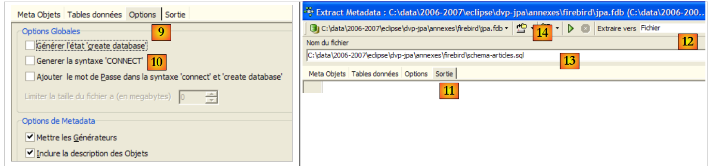 |
- in [9]: the [Options] tab allows you to configure certain extraction settings
- in [10]: uncheck the options related to generating SQL commands that allow connecting to the database. These are specific to Firebird and therefore not relevant to us.
- in [11]: the [Sortie] tab allows you to specify where the script will be generated SQL
- in [12]: specify that the script must be generated in a file
- In [13]: You specify the location of this file
- in [14]: you start generating the script SQL
The generated script, with comments removed, is as follows:
Note: Lines 1-2 are specific to Firebird. They must be removed from the generated script to obtain a generic SQL.
5.4.7. Firebird JDBC driver
A Java program accesses data from a database via a JDBC driver specific to the SGBD driver used:
 |
In a multi-tier architecture like the one above, the JDBC driver is used by the [1] layer ([dao] Access Object) to access data from a database.
The Firebird driver JDBC is available at the location where Firebird was downloaded:
 |
 |
- in [1]: choose to download the JDBC driver
- in [2]: select a driver JDBC that is compatible with JDK 1.5
- In [3]: the archive containing the driver JDBC is [jaybird-full-2.1.1.jar]. We will extract this file. It will be used for all examples with Firebird.
We place it in a folder that we will refer to as <jdbc>:
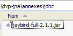
To test this JDBC driver, we will use Eclipse and the SQL Explorer plugin (Section 5.2.6). We start by declaring the Firebird JDBC driver:
 |
- in [1]: go to Window / Preferences
- in [2]: select option SQL Explorer / JDBC Drivers
- In [3]: select the driver JDBC for Firebird
- in [4]: proceed to the configuration phase
- in [5]: go to the [Extra Class Path] tab
- with [6], specify the driver file JDBC. Once this is done, it appears in [7]. Here, select the driver previously placed in the <jdbc> folder
- in [8]: the name of the Java class for the driver JDBC. It can be obtained using the [8b] button.
- Click [OK] to validate the configuration
 |
- In [9]: the Firebird driver JDBC is now configured. You can proceed to use it.
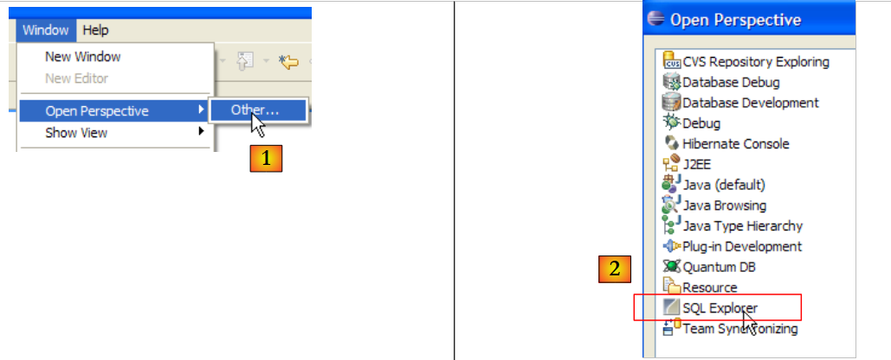 |
- In [1]: open a new perspective
- in [2]: select the [SQL Explorer] perspective
 |
- in [3]: create a new connection
- in [4]: give it a name
- in [5]: select the Firebird driver from the drop-down list
- in [6]: specify the database name you want to connect to, in this case: [jdbc:firebirdsql:localhost/3050:C:\data\2006-2007\eclipse\dvp-jpa\annexes\jpa\jpa.fdb]. [jpa.fdb] is the database previously created with IBExpert.
- in [7]: the username for the connection, here [sysdba], the Firebird administrator
- in [8]: their password [masterkey]
- Validate the connection configuration with [OK]
 |
- in [1]: double-click on the name of the connection you want to open
- in [2]: log in (sysdba, masterkey)
- in [3]: the connection is open
- in [4]: the database structure is displayed. The table [ARTICLES] is visible. Select it.
 |
- in [5]: in the [Database Detail] window, we have the details of the selected object in [4], here the table [ARTICLES]
- in [6]: the [Columns] tab shows the table structure
- in [7]: the [Preview] tab shows the table structure
You can run queries SQL in the [SQL Editor] window:
 |
- in [1]: select an open connection
- in [2]: enter the SQL command to execute
- in [3]: execute it
- in [4]: recall the executed command
- in [5]: its result
5.5. SGBD s MySQL5
5.5.1. Installation
The SGBD MySQL5 is available at the url [http://dev.mysql.com/downloads/]:
 |
- in [1]: select the desired version
- in [2]: select a Windows version
 |
- in [3]: select the desired version Windows
- in [4]: the downloaded zip file contains an executable [Setup.exe] [4b] that must be extracted and run to install MySQL5
 |
- in [5]: choose a typical installation
- in [6]: Once the installation is complete, you can configure the server MySQL5
 |
- in [7]: choose a standard configuration, the one that asks the fewest questions
- in [8]: the server MySQL5 will be a Windows service
 |
- as [9]: by default, the server administrator is root with no password. You can keep this configuration or set a new password for root. If the installation of MySQL5 follows the uninstallation of a previous version, this operation may fail. There is no way to recover from this.
- In [10]: you are prompted to configure the server
Installing MySQL5 creates a folder in [Démarrer / Programmes ]:

You can use [MySQL Server Instance Config Wizard] to reconfigure the server:
 |
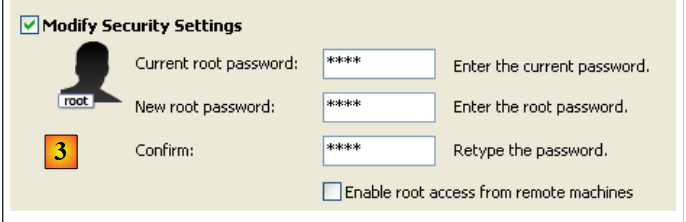 |
 |
- In [3]: we change the root password (here root/root)
5.5.2. Start / Stop MySQL5
The MySQL5 server was installed as a Windows service that starts automatically; c.a.d launches as soon as Windows starts. This operating mode is impractical. We will change it:
[Démarrer / Panneau de configuration / Performances et maintenance / Outils d'administration / Services ]:
 |
- to [1]: we double-click on [Services]
- to [2]: we see that a service named [MySQL] is present, that it is running ([3]), and that it starts automatically ([4]).
To change this behavior, double-click the [MySQL] service:
 |
- to [1]: set the service to manual startup
- to [2]: stop it
- in [3]: we confirm the new service configuration
To manually start and stop the MySQL service, you can create two shortcuts:
 |
- in [1]: the shortcut to start MySQL5
- in [2]: the shortcut to stop it
5.5.3. Clients for administration MySQL
On the MySQL website, you can find clients for managing SGBD:
 |
- in [1]: select [MySQL GUI Tools], which contains various graphical clients tools for either administering the SGBD or operating it
- in [2]: select the appropriate Windows version
 |
- in [3]: download an .msi file to run
- as [4]: once the installation is complete, new shortcuts appear in the [Menu Démarrer / Programmes / mySQL] folder.
Let’s launch MySQL (using the shortcuts you created), then launch [MySQL Administrator] via the menu above:
 |
- in [1]: enter the root user’s password (root here)
- in [2]: you are logged in and can see that MySQL is active
5.5.4. Creating a jpa user and a jpa database
The tutorial uses MySQL5 with a database named jpa and a user of the same name. We will now create them. First, the user:
 |
- In [1]: select [User Administration]
- In [2]: right-click in the [User accounts] section to create a new user
- In [3]: the user is named jpa and their password is jpa
- In [4]: Confirm the creation
- in [5]: the user [jpa] appears in the [User Accounts] window
Now the database:
 |
- In [1]: select option [Catalogs]
- In [2]: right-click on the [Schemata] window to create a new schema (designates a database)
- in [3]: name the new schema
- in [4]: it appears in the [Schemata] window
 |
- in [5]: select the schema [jpa]
- in [6]: the objects of the schema [jpa] appear, including the tables. There are none yet. A right-click would allow you to create them. We’ll leave that to the reader.
Let’s return to the user [jpa] to grant them full permissions on the schema [jpa]:
 |
- in [1], then [2]: select user [jpa]
- in [3]: select the [Schema Privileges] tab
- in [4]: select the schema [jpa]
- in [5]: grant the user [jpa] full privileges on the schema [jpa]
 |
- in [6]: we confirm the changes made
To verify that user [jpa] can work with schema [jpa], we shut down administrator MySQL. We restart it and log in this time as [jpa/jpa]:
 |
- as [1]: log in (jpa/jpa)
- in [2]: the connection was successful, and in [Schemata], we see the schemas for which we have permissions. We see the schema [jpa].
We will now create the same table [ARTICLES] as with the SGBD Firebird using the script SQL [schema-articles.sql] generated in section 5.4.6.
 |
- in [1]: use the [MySQL Query Browser] application
- in [2], [3], [4]: log in (jpa / jpa / jpa)
 |
- in [5]: open a script SQL to execute it
- in [6]: specify the script [schema-articles.sql] created in section 5.4.6.
 |
- in [7]: the script is loaded
- in [8]: it is executed
- in [9]: the table [ARTICLES] has been created
5.5.5. r driver JDBC from MySQL5
The driver JDBC from MySQL can be downloaded from the same location as SGBD:
 |
 |
- in [1]: choose the appropriate JDBC driver
- in [2]: select the appropriate version Windows driver
- In [3]: In the downloaded ZIP file, the Java archive containing the JDBC driver is [mysql-connector-java-5.0.5-bin.jar]. We will extract it to use it in the examples of the JPA tutorial.
We place it in the same location as the previous one (section 5.4.7) in the <jdbc> folder:
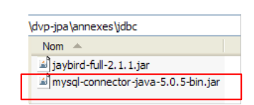 |
To test this JDBC driver, we will use Eclipse and the SQL Explorer plugin. Readers are encouraged to follow the procedure described in section 5.4.7. Here are a few relevant screenshots:
 |
- in [1]: the JDBC driver archive has been selected from MySQL5
- in [2]: the driver JDBC from MySQL5 is available
 |
- in [3]: connection definition (user, password)=(jpa, jpa)
- in [4]: the connection is active
- in [5]: database connected
5.6. SGBD s PostgreSQL
5.6.1. Installation
The SGBD PostgreSQL is available at the url [http://www.postgresql.org/download/]:
 |
- in [1]: the PostgreSQL download site
- in [2]: choose a version for Windows
- in [3]: choose a version with installer
 |
- in [4]: the contents of the downloaded zip file. Double-click the [postgresql-8.2.msi] file
- in [5]: the first page of the installation wizard
 |
- in [6]: choose a typical installation by accepting the default values
- in [6b]: creation of the Windows account that will run the PostgreSQL service, here the pgres account with the password pgres.
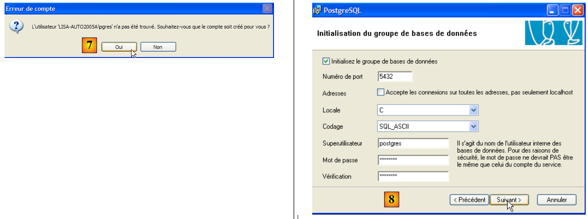 |
- in [7]: let PostgreSQL create the [pgres] account if it does not already exist
- In [8]: define the administrator account for SGBD, here "postgres" with the password "postgres"
 |
- In [9] and [10]: accept the default values until the end of the wizard. PostgreSQL will be installed.
Installing PostgreSQL creates a folder in [Démarrer / Programmes ]:
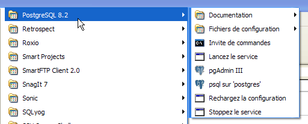
5.6.2. Start / Stop PostgreSQL
The PostgreSQL server was installed as a Windows service that starts automatically; c.a.d launches as soon as Windows starts. This mode of operation is inconvenient. We will change it:
[Démarrer / Panneau de configuration / Performances et maintenance / Outils d'administration / Services ]:
 |
- to [1]: we double-click on [Services]
- to [2]: we see that a service named [PostgreSQL] is present, that it is running ([3]), and that it starts automatically ([4]).
To change this behavior, we double-click on the [PostgreSQL] service:
 |
- to [1]: set the service to manual startup
- in [2]: stop it
- in [3]: confirm the new service configuration
To manually start and stop the PostgreSQL service, you can use the shortcuts in the [PostgreSQL] folder:
 |
- in [1]: the shortcut to start PostgreSQL
- in [2]: the shortcut to stop it
5.6.3. Administer PostgreSQL
In the screenshot above, the [pgAdmin III] application (3) allows you to manage SGBD and PostgreSQL. Let’s launch SGBD, then [pgAdmin III] via the menu above:
 |
- In [1]: double-click on the PostgreSQL server to connect to it
- in [2,3]: log in as the administrator of SGBD, here (postgres / postgres)
 |
- in [4]: the only existing database
- in [5]: the only existing user
5.6.4. Creating a jpa user and a jpa database
The tutorial uses PostgreSQL with a database named jpa and a user of the same name. We will now create them. First, the user:
 |
- in [1]: we create a new role (~user)
- in [2]: create the jpa user
- in [3]: their password is jpa
- in [4]: we repeat the password
- in [5]: the user is authorized to create databases
- in [6]: the user [jpa] appears among the login roles
Now for the database:
 |
- in [1]: create a new connection to the server
- in [2]: it will be named jpa
- in [3]: machine to which we want to connect
- in [4]: the user logging in
- in [5]: their password. We validate the connection configuration with [OK]
- in [6]: the new connection has been created. It belongs to the user jpa. The user will now create a new database:
 |
- n [1]: a new database is added
- in [2]: its name is jpa
- in [3]: its owner is the user jpa created earlier. We confirm with [OK]
- In [4]: the jpa database has been created. A single click on it connects us to it and reveals its structure:
 |
- in [5]: the objects of the [jpa] schema appear, notably the tables. There are none yet. A right-click would allow you to create them. We’ll leave that to the reader.
We will now create the same table [ARTICLES] as with the previous SGBD using the script SQL [schema-articles.sql] generated in section 5.4.6.
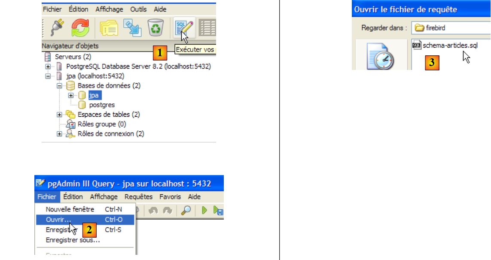 |
- in [1]: open the SQL editor
- in [2]: open a script SQL
- to [3]: select the script [schema-articles.sql] created in section 5.4.6.
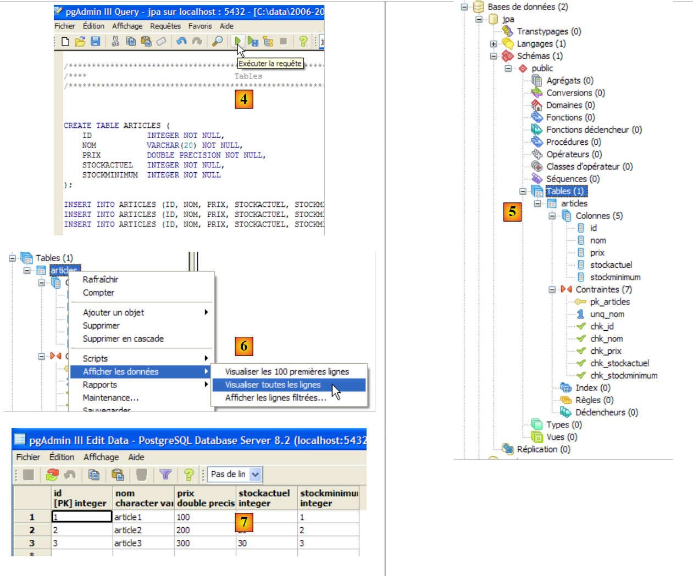 |
- to [4]: the script is loaded. It is executed.
- in [5]: the table [ARTICLES] has been created.
- in [6, 7]: its contents
5.6.5. Driver JDBC for PostgreSQL
The driver JDBC for PostgreSQL is available in the [jdbc] folder within the PostgreSQL installation folder:
 |
We place the Jdbc archive, as in the previous steps (section 5.4.7), in the <jdbc> folder:
 |
To test this JDBC driver, we will use Eclipse and the SQL Explorer plugin. The reader is invited to follow the procedure explained in section 5.4.7. We present a few relevant screenshots:
 |
- in [1]: the JDBC driver archive has been designated from PostgreSQL
- in [2]: the driver JDBC from PostgreSQL is available
 |
- in [3]: connection definition (user, password)=(jpa, jpa)
- in [4]: the connection is active
- in [5]: the database is connected
- in [6]: the contents of table [ARTICLES]
5.7. SGBD s Oracle 10g Express
5.7.1. Installation
SGBD Oracle 10g Express is available at url [http://www.oracle.com/technology/software/products/database/xe/index.html]:
 |
- at [1]: the Oracle 10g Express download site
- in [2]: select a version Windows version. Once the file has been downloaded, run it:
 |
- in [1]: double-click the [OracleXE.exe] file
- in [2]: the first page of the installation wizard
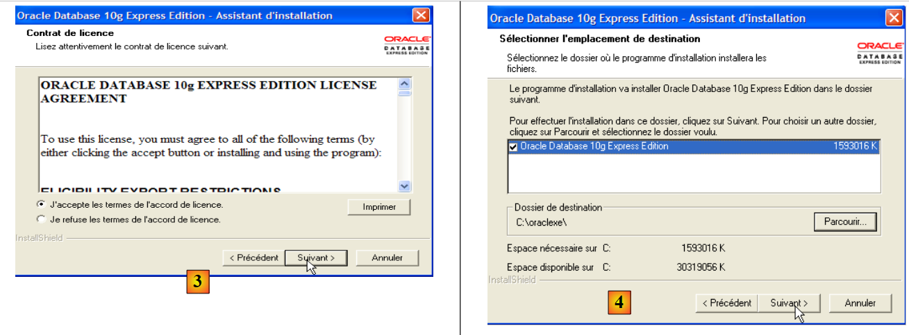 |
- in [3]: accept the license
- in [4]: accept the default values.
 |
- in [5,6]: the user SYSTEM will have the password "system".
- in [7]: the installation begins
The installation of Oracle 10g Express creates a folder in [Démarrer / Programmes ]:

5.7.2. Start / Stop Oracle 10g
As with the previous SGBD entries, Oracle 10g was installed as a Windows service that starts automatically. We are changing this configuration:
[Démarrer / Panneau de configuration / Performances et maintenance / Outils d'administration / Services ]:
 |
- to [1]: we double-click on [Services]
- to [2]: we see that a service named [OracleServiceXE] is present, that it is running ([3]), and that it starts automatically ([4]).
- in [5]: another Oracle service, called "Listener," is also active and set to start automatically.
To change this behavior, we double-click on the [OracleServiceXE] service:
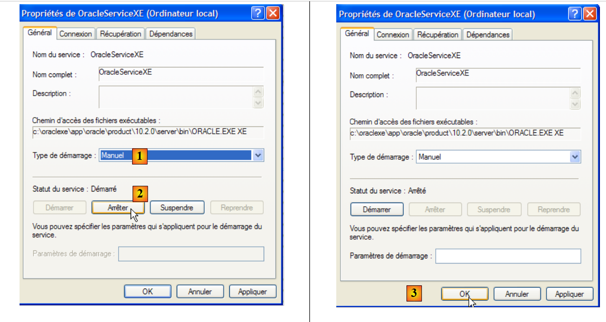 |
- in [1]: set the service to manual startup
- In [2]: stop it
- in [3]: confirm the new service configuration
We will do the same with the [OracleXETNSListener] service (see [5] above). To manually start and stop the OracleServiceXE service, we can use the shortcuts in the [Oracle] folder:
 |
- in [1]: to start SGBD
- [2]: to stop it
- in [3]: to manage it (which starts it if it is not already running)
5.7.3. Creating a jpa user and a jpa database
In the screenshot above, the [3] application allows you to manage the SGBD Oracle 10g Express. Let’s launch SGBD [1], then the administration application [3] via the menu above:
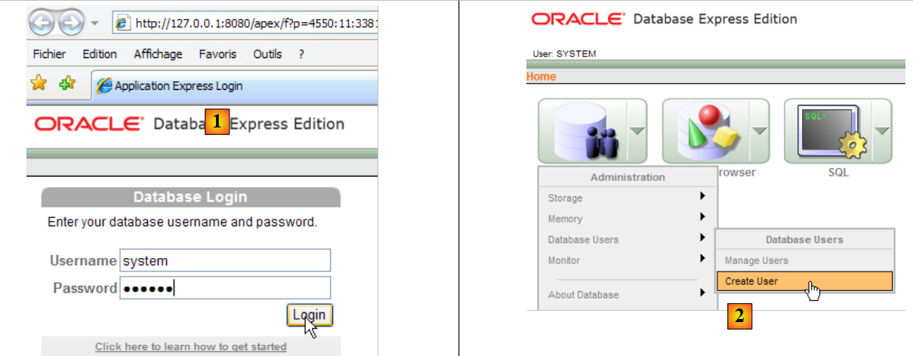 |
- In [1]: log in as the administrator of SGBD, here (system/system)
- in [2]: create a new user
 |
- in [4]: user name
- in [5, 6]: their password, here jpa
- in [7]: the user jpa was created
In Oracle, a user is automatically associated with a database of the same name. The jpa database therefore exists at the same time as the jpa user.
5.7.4. Creation of table [ARTICLES] in the jpa database
OracleXE was installed with a SQL client running in command-line mode. You can work more comfortably with the SQL Developer client, also provided by Oracle. It can be found on the website:
[http://www.oracle.com/technology/products/database/sql_developer/index.html]
 |
- in [1]: the download site
- in [2]: download a Windows version without JRE if it is already installed (as is the case here), since version is a Java application.
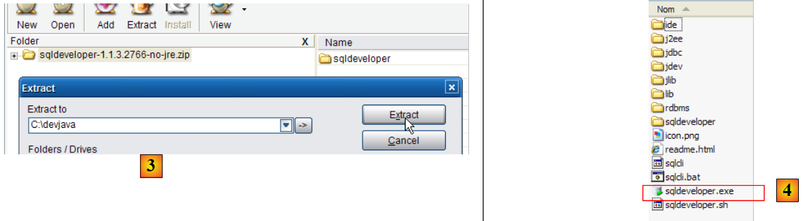 |
- in [3]: unzip the downloaded file
- in [4]: run the executable [sqldeveloper.exe]
 |
- in [5]: when launching [SQL Developer] for the first time, specify the path to the JRE installed on the machine
- in [5b]: create a new connection
 |
- in [6]: SQL Developer allows you to connect to various SGBD. Select Oracle.
- in [7]: name given to the connection being created
- in [8]: owner of the connection
- in [9]: its password (jpa)
- in [10]: keep the default values
- in [11]: to test the connection (Oracle must be running)
- in [12]: to complete the connection configuration
- in [13]: the objects in the jpa database
- in [14]: tables can be created. As in the previous cases, we will create the table [ARTICLES] from the script created in section 5.4.6.
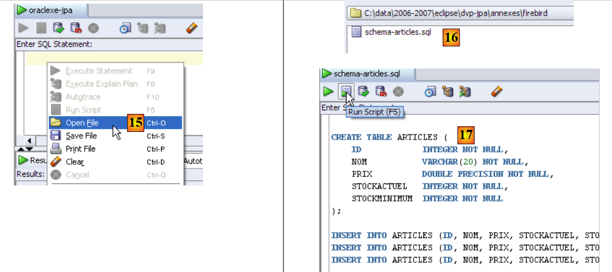 |
- in [15]: open the script SQL
- in [16]: specify the script SQL created in section 5.4.6.
- in [17]: the script to be executed
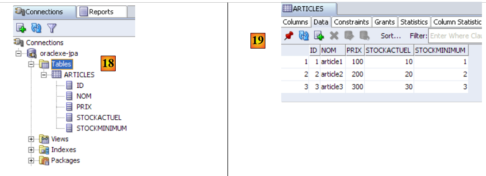 |
- in [18]: the result of the execution: the table [ARTICLES] has been created. Double-click on it to access its properties.
- in [19]: the table's contents.
5.7.5. Driver JDBC for OracleXE
The JDBC driver for OracleXE is available in the [jdbc/lib] folder within the OracleXE installation folder [1]:
 |
We place the Jdbc archive [ojdbc14.jar], as in the previous steps (section 5.4.7), in the <jdbc> folder [2]:
To test this driver JDBC, we will use Eclipse and the SQL Explorer plugin. The reader is invited to follow the procedure explained in section 5.4.7. We present a few relevant screenshots:
 |
- in [1]: the JDBC driver archive has been selected from OracleXE
- in [2]: the driver JDBC from OracleXE is available
 |
- in [3]: connection definition (user, password)=(jpa, jpa)
- in [4]: the connection is active
- in [5]: the database is connected
- in [6]: the contents of table [ARTICLES]
5.8. SGBD s SQL Server Express 2005
5.8.1. Installation
SGBD SQL Server Express 2005 is available at url [http://msdn.microsoft.com/vstudio/express/sql/download/]:
 |
- in [1]: first download and install the .NET Framework 2.0
- in [2]: then install and download SQL Server Express 2005
- in [3]: then install and download SQL Server Management Studio Express, which allows you to administer SQL Server
Installing SQL Server Express creates a folder in [Démarrer / Programmes ]:
 |
- in [1]: the configuration application for SQL Server. It also allows you to start/stop the server
- in [2]: the server administration application
5.8.2. Start / Stop SQL Server
As with the previous SGBD entries, the SQL Server Express has been installed as a Windows service that starts automatically. We are changing this configuration:
[Démarrer / Panneau de configuration / Performances et maintenance / Outils d'administration / Services ]:
 |
- to [1]: we double-click on [Services]
- to [2]: we see that a service named [SQL Server] is present, that it is running [3], and that it starts automatically [4].
- in [5]: another service related to SQL Server, called "SQL Server Browser," is also active and set to start automatically.
To change this behavior, double-click the [SQL Server] service:
 |
- to [1]: set the service to manual startup
- in [2]: stop it
- In [3]: validate the new service configuration
The same procedure applies to the [SQL Server Browser] service (see [5] above). To manually start and stop the SQL server service, you can use the [1] application in the [SQL server] folder:
 |
 |
- In [1]: ensure that the TCP/IP protocol is enabled, then go to the protocol properties.
- in [2]: in the [IP Addresses], option, and [IPAll] tabs:
- the [TCP Dynamic ports] field is left blank
- the server listening port is set to 1433 in [TCP Port]
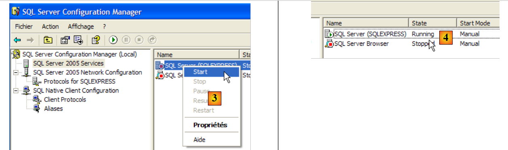 |
- in [3]: right-clicking on the [SQL Server] service gives access to the server's start/stop options. Here, we start it.
- In [4]: SQL Server is running
5.8.3. Creating a jpa user and a jpa database
Let’s launch SGBD as shown above, then the [1] administration application via the menu below:
 |
 |
- In [1]: Log in to the SQL Server as a Windows administrator
- In [2]: configure the connection properties
 |
- in [3]: enable mixed login mode to the server: either with a Windows login (a Windows user) or with a SQL Server login (an account defined within SQL Server, independent of any Windows account).
- in [3b]: create a SQL Server user
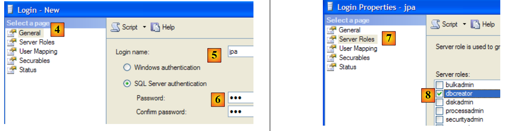 |
- in [4]: option [General]
- in [5]: the login
- in [6]: the password (jpa here)
- in [7]: option [Server Roles]
- in [8]: the user jpa will have the right to create databases
We validate this configuration:
 |
- in [9]: the user jpa has been created
- in [10]: we log out
- in [11]: we log back in
 |
- in [12]: we log in as user jpa/jpa
- in [13]: once logged in, the user jpa creates a database
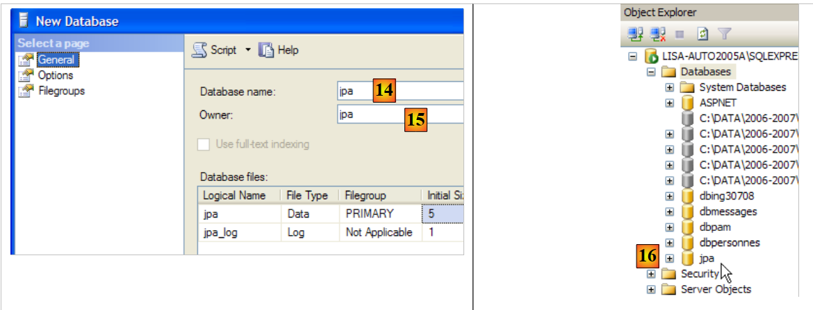 |
- in [14]: the database will be named jpa
- in [15]: and will belong to the user jpa
- in [16]: the jpa database has been created
5.8.4. Creating the table [ARTICLES] in the jpa database
As in the previous examples, we will create the table [ARTICLES] from the script created in section 5.4.6.
 |
- in [1]: we open a script SQL
- to [2]: specify the script SQL created in section 5.4.6, page 240.
- in [3]: you must log in again (jpa/jpa)
- in [4]: the script to be executed
- in [5]: select the database in which the script will be executed
- in [6]: execute it
 |
- in [7]: the result of the execution: the table [ARTICLES] has been created.
- in [8]: we request to view its contents
- in [9]: the table's contents.
5.8.5. JDBC driver for SQL Server Express
 |
- in [1]: a Google search using the text [Microsoft SQL Server 2005 JDBC Driver] takes us to the download page for the JDBC driver. We select the most recent version and version
- to [2]: the downloaded file. We double-click on it. The file is extracted, creating a folder containing the Jdbc driver [3]
- in [4]: we place the Jdbc archive [sqljdbc.jar], as with the previous ones (section 5.4.7), in the <jdbc> folder
To test this JDBC driver, we will use Eclipse and the SQL Explorer plugin. The reader is invited to follow the procedure explained in section 5.4.7. We present a few relevant screenshots:
 |
- in [1]: the JDBC driver archive from SQL Server has been specified
- in [2]: the driver JDBC from SQL Server is available
 |
- in [3]: connection definition (user, password)=(jpa, jpa)
- in [4]: the connection is active
- in [5]: the database is connected
- in [6]: the contents of table [ARTICLES]
5.9. SGBD HSQLDB
5.9.1. Installation
The SGBD HSQLDB is available at the url [http://sourceforge.net/projects/hsqldb]. It is a SGBD written in Java, very lightweight in memory, which manages databases in memory rather than on disk. The result is extremely fast query execution. This is its main advantage. The databases created in memory in this way can be recovered when the server is shut down and then restarted. This is because the SQL commands issued to create the databases are stored in a log file to be replayed the next time the server starts up. This ensures the persistence of the databases over time.
The method has its limitations, and HSQLDB is not intended for commercial use. Its main benefit lies in testing or demonstration applications. For example, the fact that HSQLDB is written in Java allows it to be included in Ant (Another Neat Tool) tasks, a Java task automation tool. Thus, daily tests of code under development, automated by Ant, will be able to incorporate database tests managed by SGBD and HSQLDB. The server will be started, stopped, and managed by Java tasks.
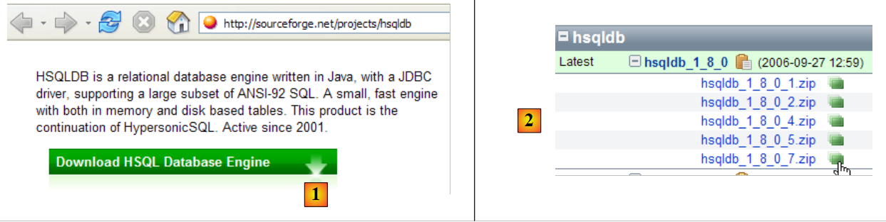 |
- in [1]: the download site
- in [2]: download the most recent version
 |
- in [3]: unzip the downloaded file
- in [4]: the [hsqldb] folder resulting from the extraction
- to [5]: the [demo] folder containing the script to start the [hsql] server [6] and [7], the one to launch a basic server administration tool.
5.9.2. Start / Stop HSQLDB
To start the HSQLDB server, double-click the [runManager.bat] [6] application above:
 |
- In [1]: you can see that to stop the server, simply press Ctrl-C in the window.
5.9.3. The [test] database
The default database is located in the [data] folder:
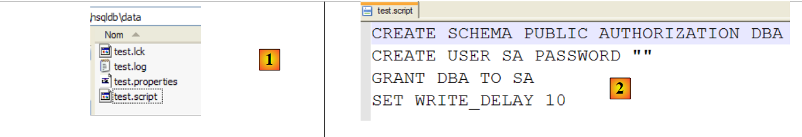 |
- in [1]: at startup, SGBD HSQL executes the script named [test.script]
- Line 1: A schema named [public] is created
- Line 2: A user named [sa] with an empty password is created
- Line 3: The user [sa] is granted administrative privileges
In the end, a user with administrative privileges has been created. This is the user we will use going forward.
5.9.4. JDBC driver for HSQL
The SGBD HSQL JDBC driver is located in the [lib] folder:
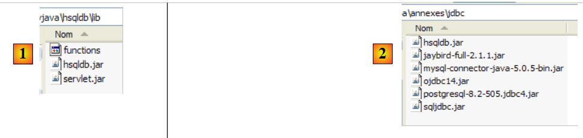 |
- in [1]: the [hsqldb.jar] archive contains the JDBC driver for SGBD HSQL
- in [2]: we place this archive, like the previous ones (section 5.4.7), in the <jdbc> folder
To verify this JDBC driver, we will use Eclipse and the SQL Explorer plugin. The reader is invited to follow the procedure explained in section 5.4.7. We present a few relevant screenshots:
 |
- in [1]: [window / preferences / SQL Explorer / JDBC Drivers]
- in [2]: we configure the server [HSQLDB]
- in [3]: specify the archive [hsqldb.jar] containing the JDBC driver
- in [4]: the name of the Java class for the JDBC driver
- in [5]: the JDBC driver is configured
Once this is done, we connect to the HSQL server. We start it beforehand.
 |
- in [6]: create a new connection
- in [7]: we give it a name
- in [8]: We want to connect to the HSQLDB server
- in [9]: the url database we want to connect to. This will be the [test] database seen previously.
- in [10]: we are connecting as user [sa]. We saw that he was the administrator of SGBD.
- In [11]: The user [sa] does not have a password.
We validate the connection configuration.
 |
- In [12]: we log in
- in [13]: we authenticate
- in [14]: we are logged in
 |
- in [15]: the schema [PUBLIC] does not yet have a table
- in [16]: we are going to create the table [ARTICLES] from the script [schema-articles.sql] created in section 5.4.6.
- in [17]: we select the script
 |
- in [18]: the script to be executed
- in [19]: we run it after removing all comments, since HSQLB does not accept them.
 |
- Once the script has run, refresh the database display in [20]
- in [21]: the table [ARTICLES] is indeed there
- in [22]: its contents
Let’s stop and then restart the server HSQLDB. Once that’s done, let’s examine the file [test.script]:
We can see that SGBD has stored the various SQL commands executed during the previous session and that it re-executes them at the start of the new session. We can also see (line 2) that the table [ARTICLES] is created in memory (MEMORY). At each session, the SQL commands issued are stored in [test.log] to be copied at the start of the next session into [test.script] and replayed at the start of the session.
5.10. The SGBD Apache Derby
5.10.1. Installation
The SGBD Apache Derby is available at url [http://db.apache.org/derby/]. It is a SGBD also written in Java and also very lightweight in memory. It offers similar advantages to HSQLDB. It can also be embedded in Java applications, c.a.d. be an integral part of the application and run within the same JVM.
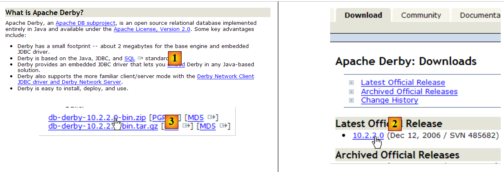 |
- in [1]: the download site
- in [2,3]: download the most recent version
 |
- in [3]: unzip the downloaded file
- in [4]: the [db-derby-*-bin] folder resulting from the extraction
- to [5]: the [bin] folder containing the script to start the server [db derby] [6] and [7], the one to stop it.
5.10.2. Start / Stop Apache Derby (Derby DB)
To start the Db Derby server, double-click the [startNetworkServer] [6] application above:
 |
- in [1]: the server is started. It will be stopped using the [stopNetworkServer] [7] application shown above.
5.10.3. JDBC driver for Derby DB
The SGBD Db Derby JDBC driver is located in the [lib] folder within the installation directory:
 |
- in [1]: the [derbyclient.jar] archive contains the SGBD Db Derby JDBC driver
- in [2]: we place this archive, like the previous ones (section 5.4.7), in the <jdbc> folder
To test this JDBC driver, we will use Eclipse and the SQL Explorer plugin. The reader is invited to follow the procedure explained in section 5.4.7. We present a few relevant screenshots:
 |
- in [1]: [window / preferences / SQL Explorer / JDBC Drivers]
- in [2]: the Apache Derby JDBC driver is not in the list. We add it.
 |
- in [3]: we give the new driver a name
- in [4]: specify the format of the Url files managed by the JDBC driver
- in [5]: We have specified the .jar archive for the JDBC driver
- in [5b]: the name of the Jdbc driver's Java class
- in [5c]: the JDBC driver is configured
Once this is done, we connect to the Apache Derby server. We start it beforehand.
 |
- in [6]: create a new connection
- in [7]: we give it a name
- in [8]: we want to connect to the Apache Derby server
- In [9]: the url of the database you want to connect to. After the standard prefix [jdbc:derby://localhost:1527], enter the path to a directory on the disk containing a Derby database. The option [create=true] command allows you to create this directory if it does not yet exist.
- In [10,11]: you connect as the user [jpa/jpa]. I haven’t looked into it in depth, but it seems you can use any login and password you want. Here, you specify the database owner if create=true.
Validate the connection configuration.
 |
- In [12]: we connect
- In [13]: we authenticate (jpa/jpa)
- in [14]: we are connected
 |
- in [15]: the schema [jpa] does not appear yet.
- in [16]: we will create the table [ARTICLES] from the script [schema-articles.sql] created in section 5.4.6.
- In [17]: Select the script
 |
- in [18]: the script to be executed
- in [19]: we execute it after removing all comments, since Apache Derby, like HSQLB, does not accept them.
 |
- Once the script has run, refresh the database view
- in [21]: the schema [jpa] and the table [ARTICLES] are indeed there
- in [22]: the contents of the table [ARTICLES]
 |
- in [23]: the contents of the [derby\jpa] folder in which the database was created.
5.11. The Spring 2 framework
The Spring 2 framework is available at url [http://www.springframework.org/download]:
 |
- in [1]: download the latest version
- in [2]: download version, known as the "with dependencies" version, because it contains the .jar archives of third-party tools that Spring integrates and that you always need.
 |
- to [3]: unzip the downloaded archive
- in [4]: the Spring 2.1 installation folder
 |
- In [5]: The <dist> folder contains the Spring archives. The [spring.jar] archive contains all the classes of the Spring framework. These are also available by module in the <modules> folder in [6]. If you know which modules you need, you can find them here. This prevents you from including archives in the application that it doesn’t need.
 |
- In [7]: the <lib> folder contains the archives of third-party tools used by Spring
- in [8]: some archives from the [jakarta-commons] project
When the tutorial uses Spring archives, you must retrieve them either from the <dist> folder or the <lib> folder within the Spring installation directory.
5.12. The EJB3 container from JBoss
The EJB3 container from JBoss is available at url [http://labs.jboss.com/jbossejb3/downloads/embeddableEJB3]:
 |
- in [1]: we download JBoss and EJB3. We can see the product’s date (September 2006), even though we are downloading it in May 2007. One might wonder if this product is still being developed.
- in [2]: the downloaded file
 |
- in [3]: the unzipped ZIP file
- in [4]: the archives [hibernate-all.jar, jboss-ejb3-all.jar, thirdparty-all.jar] form the container EJB3 of JBoss. They must be placed in the classpath of the application using this container.